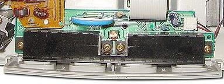

Entendendo o Dreamcast
 :::. Por Gigacom
:::. Por Gigacom
É muito útil saber como foi projetado um console, e conhecer bem as peças dele antes de fazer qualquer manutenção, seja ela uma simples limpeza, ou mesmo troca de algum componente do hardware. Então, vou explicar aqui da melhor forma possível, como o Dreamcast pode ser desmontado e reparado, sem ser danificado, assim como as principais funções de cada componente.
Peças internas e desmontagem
Quem já mexeu com montagem de computador, pode ter percebido algumas coisas simples que são padrões nos hardwares de computadores, como por exemplo, uma regrinha de ouro que diz: cada peça tem somente uma maneira de se encaixar, e o proprio encaixe impossibilita que ele seja feito de maneira errada. É aquele negocio, se você vai conectar o cabo de dados de um HD SATA ou IDE, ele só vai entrar no HD da forma correta, não adianta forçar o cabo ou o conector, ele não vai entrar, ou então vai se estripular todo! A mesma coisa ocorre no Dream, ou seja, cada peça tem o local de seu encaixe, e a peça só encaixa de uma maneira.
As peças de encaixe no Dream, por ordem de desmontagem, são:
Fonte: é uma placa com diversos capacitores, que possui na extremidade que fica na traseira do console a entrada para o cabo de energia, e um plugue para conectar o switch liga/desliga do console. Na outra extremidade, há um plugue plastico com 6 pontos, sendo que 3 pontos desses tem uma voltagem especifica (3,3V, 5V e 12V) e outros três servem de terra (ground). Para remover a fonte, é necessário retirar dois parafusos que a encaixam (um em cada ponta da placa), em seguida é preciso retirar o plugue do swicht liga/desliga, e remover a placa puxando-a para cima. Nunca a remova puxando só um dos lados! Isso pode quebrar o plugue plastico que liga a placa ao console, ou mesmo quebrar os pinos da placa mãe que se conectam à fonte!!!
| Fonte do Dreamcast. Notar o fusivel ao lado da entrada do cabo de energia. Quando queima, é facil substituí-lo. |
Drive de CD/GD rom: é uma peça constituída pelo leitor de CD/GD disc, uma placa controladora que monitora e executa as funções do drive pedidas pela CPU do Dream, e uma chapa de metal que molda e protege todo o dispositivo. Essa chapa de metal é parafusada em três pontos na chapa de metal que cobre toda a placa mãe do console. Basta remover esses parafusos, e puxar o drive para cima, da mesma forma que a fonte, dessa forma não haverá problema algum. Tenha apenas o cuidado de apoiar a parte de cima do leitor, ela é solta e presa apenas pelos fios de dados do leitor que estão ligados à placa controladora.
| O drive de CD/GD do Dreamcast. Removê-lo e instalar de volta é simples como comer algodão doce. |
Cooler: é o ventiladorzinho do Dream, é o dito cujo que faz o Dream assobiar feito um curió rouco com dor de barriga. Ele tem um plugue pequeno e meio delicado, que é ligado à plaquinha de entrada dos controles. Desencaixe o plugue que está conectado nessa placa, retire os dois parafusos que prendem o cooler na parte plastica do Dream, e pronto, não há mais nada a se fazer.
| Cooler do Dreamcast. Essas são imagens da segunda versão do cooler. A primeira era feita de metal, e ainda mais barulhenta que essa aí |
Placa de entrada dos controles: principal causa de muitos problemas no Dream... essa plaquinha tem diversas funcões. Além de servir de ponto de entrada para os quatro controles, ela possui o led que indica se o Dream está ligado ou não, tem uma bateria ML2032 que serve para alimentar a BIOS do console para que este não perca as configurações iniciais e de data e hora, e tambem é a responsável pelo contato do cooler à CPU, servindo de ponte entre ambos. Essa plaquinha costuma apresentar problemas com frequência... mas geralmente, só realizando a substituição dela é que se resolve os porblemas todos de forma eficaz... mas há outros meios que vou comentar em outros artigos. Para removê-la, puxe o cabo flat (o cabo branco achatado) da placa mãe do Dream. Puxe com cuidado, apoiando os dedos na parte plana do cabo.
|  |
| Plaquinha de entrada dos controles. A peça em azul é a bateria, que é responsável por alimentar a BIOS e salvar as configurações do Dream. |
Placa mãe: e eis que chegamos ao cérebro e principais orgãos do console.
A placa mãe do Dream é coberta por uma chapa de zinco.
Essa chapa além de servir como dissipador de calor, serve para evitar que o aparelho emita ou receba qualquer
tipo de radiação que possa provocar o mal funcionamento
do console, ou de outros aparelhos eletrônicos que não
sejam o Dreamcast. Na verdade, a existência de uma
proteção como essa é exigida pelas leis de
diversos países, principalmente as rígidas leis
americanas (a FCC é que regula essas normas por lá). Como
a chapa é bem grande, ela é presa em diversos pontos por
parafusos. Remová-os todos, e retire essa chapa de metal
levantando-a para cima com cuidado. A placa sai facilmente,
porém se ela não estiver saíndo, certifique-se de
que não há nenhum parafuso a prendendo no plástico
do console. Após remover a chapa de metal superior, você
verá a placa mãe, e logo abaixo uma outra chapa de metal
que já deverá estar solta. Essas chapas cobrem toda a
placa mãe, ficando esta como um hamburguer dentro de um
sanduíche do Big Mac.
Para encaixar todas as peças novamente, é só
seguir o processo inverso de desmontagem (meio óbvio né?  ).
).
** não são bem borrachas... é um material molenga que se desfaz à toa. A importância dele é vital para o funcionamento do console. Sem isso, o aparelho fica resetando sozinho por conta do superaquecimento. O nome desta borracha é elastômero térmico, e é bastante conhecido no mercado como adesivo térmico.
Partes plásticas
O
plástico do Dream é do tipo ABS injetado em molde,
possuindo grande resistência à impactos, calor e
arranhões (tá, nem tanto para arranhões).
Infelizmente, esse plástico tem o horrivel costume de amarelar
com o tempo... isso ocorre por reações quimicas que
acontecem com o plástico quando este entra em contato com
sujeira, e recebe algum tipo de radiação, como a UV
(ultra violeta). Traduzindo: se você pegar um Dream, e
abandoná-lo na beira de uma janela, quando ele acumular poeira e
receber a luz do sol, depois de uns dias ele vai tá tão
amarelo que até macaco vai pensar que é uma banana
gigante  .
.
É meio complicado remover esse amarelão... uma lavagem costuma ajudar, mas nem sempre dá o resultado esperado. Mas não vamos falar sobre isso agora, pois você pode ver dicas de limpeza do Dream clicando aqui. O mais importanta a saber é que, depois do Dream ser desmontado, os buracos onde os parafusos das placas são colocados, podem quebrar facilmente, pois ficam fragéis com o tempo. Tambem na tampa do drive de CD, tem algumas molas e peças de metal que servem de trava e sistema de engrenagem para levantar e fechar a tampa. Você pode remover essas peças se quiser, mas não recomendo (pois é um saco colocá-las de volta no lugar).
A
pior coisa que pode acontecer nessas peças, é alguma
delas quebrar... como são peças que trabalham sob
constante pressão, super bond nem sempre costuma ser eficaz nos
reparos, exigindo uma cirurgia para arrumar tudo de fato  . É sério, tem como fazer isso! Mas tambem
não vou falar sobre agora (estamos conversando apenas sobre como
funciona o Dream basicamente).
. É sério, tem como fazer isso! Mas tambem
não vou falar sobre agora (estamos conversando apenas sobre como
funciona o Dream basicamente).
Parafusos
Quando
você for desmontat um Dream, procure memorizar onde fica cada
parafuso, e separá-los conforme os tira de cada lugar. Isso digo
porque nem todos os parafusos são do mesmo tamanho ou cor.
Alguns mais curtos geralmente não são pintados, e
são usados apenas para prender a chapa do drive de CD/GD
à chapa de metal da placa mãe... outros prendem apenas o
cooler. Portanto, quando for desmontar um Dream, deixe os parafusos que
prendem cada componente junto com eles, para não dar problema na
hora da montagem.
É isso pessoal. Basicamente o que foi dito acima é o suficiente para ajudar qualquer um com um mínimo de juízo na cabeça, a como desmontar o Dream sem lascar com alguma coisa dele. Vale lembrar que para todo e qualquer tipo de reparo, é necessário utilizar as ferramentas adequadas. Use chaves philips que se encaixem perfeitamente em cada parafuso, não force e nem use algo maior ou menor do que o necessário, para evitar danos aos parafusos e demais problemas. Procure fazer a desmontagem em uma mesa grande e sem pano ou forro. Uma mesa de granito ou madeira, é mais que suficiente. Tenha tambem bastante paciência. Leva tempo desmontar tudo, leva mais tempo para montar de novo, e tudo deve ser feito com cuidado e atenção. Fazendo assim, você conseguirá tratar o seu Dream, e prolongar a sua vida sem prejudicá-lo.


{kind=link}